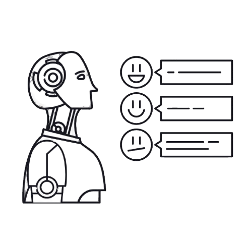
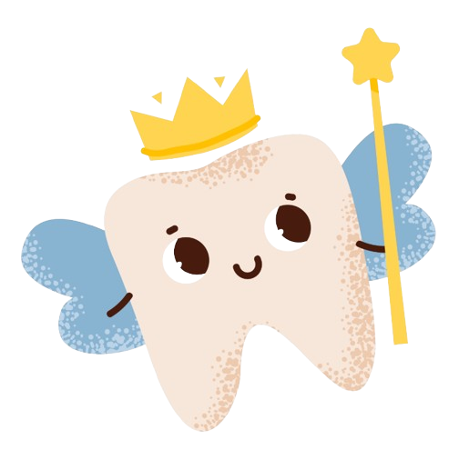

Experience
 President
President
Sep 2024 – Present
- Founded and led Nahda Student Club in Birmingham, mentoring MENA students to excel academically and professionally.
- Designed and delivered workshops on internship preparation, academic success, and career planning.
- Implemented a collaborative flat team structure to foster ownership and teamwork.
 Sales IT Intern
Sales IT Intern
Jul 2024 – Sep 2024
- Managed the execution of high-impact technology projects, ensuring seamless alignment with Procter & Gamble’s technical standards to drive business growth and operational efficiency.
- Developed real-time automated interactive business analytics Power BI dashboards, translating complex datasets into clear, actionable insights that empowered data-driven strategic decision-making.
- Led the Commercial Master Data Transformation project, successfully unifying data hierarchies across P&G’s systems and categories, streamlining processes, and enhancing data accuracy and consistency organization-wide.
 Emerging Technologies Lab Intern
Emerging Technologies Lab Intern
Jul 2023 – Aug 2023
- Enhanced AI prototypes by leveraging advanced computer vision techniques with OpenCV and optimizing data processing workflows using NumPy, resulting in more efficient and accurate computer vision applications.
- Integrated large language models (LLMs), specifically GPT to augment AI capabilities, enabling more sophisticated natural language understanding and generation within emerging technologies projects.
- Conducted comprehensive ethical AI research, analyzing the societal and organizational impacts of AI deployment, and presented actionable insights.
Education
 University of Birmingham
University of Birmingham
BSc Artificial Intelligence & Computer Science (2021 – 2025)
- Achieving First Class Honours (GPA: 4/4).
- Relevant Modules: Artificial Intelligence, Intelligent Data Analysis, and Software Engineering.
Projects
 Leveraging Large Language Models: A Framework for Review-Driven Insights in Hospitality
Oct 2024 – Present
Currently working on creating an advanced AI-powered framework utilizing Large Language Models (LLMs) such as LLaMA and BERT to perform comprehensive sentiment analysis and topic modeling on vast volumes of guest feedback data. Integrated VADER for nuanced sentiment scoring, enabling precise differentiation between subtle emotional tones within reviews, thereby enhancing the accuracy of customer satisfaction assessments. Developed interactive Power BI dashboards to visualize sentiment trends and key performance indicators (KPIs), facilitating data-driven decision-making for hotel management. Implemented data preprocessing pipelines using Python and NLP techniques to cleanse, tokenize, and normalize textual data, ensuring high-quality input for machine learning models.
 Glow Brush: Gamified Smart Toothbrush
Nov 2024 – Dec 2024
Collaborated within a team to design and develop a smart toothbrush application aimed at enhancing children's oral hygiene through gamification, leveraging insights from the Human-Computer Interaction (HCI) module. Conducted comprehensive usability testing, including cognitive walkthroughs and heuristic evaluations, to assess and improve the app's user experience, ensuring it meets high standards of accessibility and engagement. Utilized Figma for prototyping and iterative design, refining user interfaces based on feedback and usability metrics to create an intuitive and visually appealing application. Implemented user-centered and inclusive design principles, emphasizing the importance of teamwork, iterative testing, and continuous feedback in developing engaging, user-friendly solutions.
Commercial Master Data Transformation
Jul 2024 – Sep 2024
Led a global initiative to unify data hierarchies across P&G’s systems and categories by automating manual data mappings and seamlessly integrating disparate data sources, enhancing overall operational efficiency. Designed and implemented robust ETL (Extract, Transform, Load) pipelines using Power Query, ensuring accurate and timely data processing across categories.
Automated Reports & Dashboards
Aug 2024 – Sep 2024
Designed and developed dynamic Power BI dashboards that delivered real-time analytics and comprehensive business intelligence insights, enabling leadership teams to make informed, data-driven strategic decisions. Implemented advanced ETL (Extract, Transform, Load) processes using Power Query to seamlessly integrate and cleanse data from multiple sources, ensuring data accuracy and consistency across all reports. Utilized DAX to create complex calculations and measures, enhancing the analytical capabilities of dashboards and providing deeper insights into key performance indicators (KPIs). Collaborated with cross-functional teams to gather requirements and tailor dashboards to meet specific business needs. Conducted data modeling and schema design to optimize data relationships and improve query performance, facilitating faster data retrieval and analysis. Developed interactive visualizations and drill-through functionalities, enabling users to explore data at granular levels and uncover actionable trends and patterns.
Sticky-Notes Image Generator Prototype
Jul 2023 – Aug 2023
Enhanced an AI-powered system by integrating ChatGPT for advanced keyword extraction and optimization, enabling the transformation of sticky note text into contextually meaningful and visually coherent images. Utilized DALL-E API to generate high-quality images from extracted keywords, ensuring that visual outputs accurately represented the textual input while maintaining aesthetic standards.
Skills
Programming Languages
-
 Python
★★★★★
Python
★★★★★
-
 Java
★★★★★
Java
★★★★★
-
 MATLAB
★★★☆☆
MATLAB
★★★☆☆
AI & Data Science Tools
- Power BI ★★★★★
-
 Pandas
★★★★★
Pandas
★★★★★
-
 TensorFlow
★★★★☆
TensorFlow
★★★★☆
-
 PyTorch
★★★★☆
PyTorch
★★★★☆
-
 OpenCV
★★★★☆
OpenCV
★★★★☆
-
 NumPy
★★★★☆
NumPy
★★★★☆
Design & Development
-
 Figma
★★★★★
Figma
★★★★★
-
 Agile Methodologies
★★★★★
Agile Methodologies
★★★★★
- Human-Computer Interaction ★★★★★
- Usability Evaluation ★★★★☆
Additional Skills
- Natural Language Processing (NLP)
- Machine Learning (ML)
-
 Data Visualization
Data Visualization
-
 API Integration
API Integration
-
") Version Control (Git)
Version Control (Git)
Contact
Email: fernas-2002@hotmail.com
LinkedIn: Connect with me